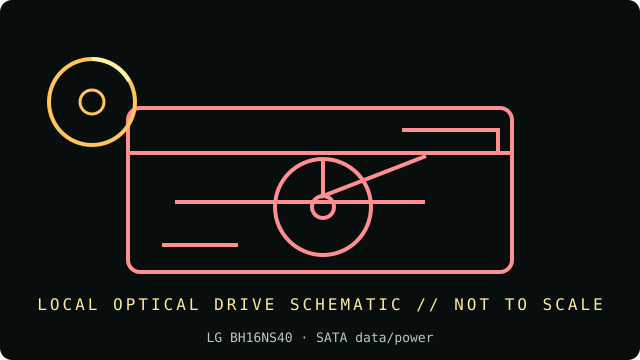

[ INDIVIDUAL COMPONENT // OPTICAL DRIVES ]
LG BH16NS40
Internal SATA 16× Blu-ray Disc rewriter with DVD-RAM support. Do not infer the same feature set from LG WH16NS40 or related model names. Specifications below are tied to the exact model identifiers and cited documentation; nearby product families may differ.

IDENTIFICATION: LG BH16NS40 · confirm full model/revision marking and compare it with the cited source before assigning a host or media capability.
Verified specifications
| Catalog subcategory | Blu-ray drives |
|---|---|
| Exact product identifier | LG BH16NS40 |
| Era / product type | Internal 16× SATA Blu-ray Disc rewriter |
| Read/write and media | Writes BD-R up to 16×, BD-RE up to 2×, DVD±R up to 16×, DVD±R DL up to 8×, DVD-RAM up to 5×, CD-R up to 48× and CD-RW up to 24×; reads BD-ROM up to 12×, BD-RE up to 8×, DVD-ROM up to 16× and CD-ROM up to 48×. |
| Interface and mechanics | SATA data/power; internal 5.25-inch half-height tray drive, 146 × 41.3 × 165 mm; approx. 750 g; 4 MB buffer in LG specifications. |
| Variant and host cautions | The complete BH16NS40 suffix and firmware matter; do not transfer specs from WH16NS40. Blu-ray playback/recording also depends on software, supported OS, region policy, interface throughput and disc type; check SATA power and bay clearance. |
Optical-media preservation notes
Blu-ray BDXL and standard BD-R/RE are different layer/capacity classes; verify the exact media logo and drive firmware. Preserve source disc condition and checksum readbacks; do not assume a BD-R is write-once if it is BD-RE.
- Handle discs by the edge or center hub; do not write on the data side or add adhesive labels over the recording surface.
- Store in a clean, cool, dry, dark environment in protective cases. Keep original media unmodified and make verified working images for access.
- Retain checksums, drive model/firmware, software, read errors, media type, and acquisition/handling history with each preservation image.
Identification and host checks
- Confirm the complete manufacturer label, model suffix, revision, serial/date code, and supplied bezel, cable, adapter, or bracket before installation.
- The complete BH16NS40 suffix and firmware matter; do not transfer specs from WH16NS40. Blu-ray playback/recording also depends on software, supported OS, region policy, interface throughput and disc type; check SATA power and bay clearance.
- Blu-ray BDXL and standard BD-R/RE are different layer/capacity classes; verify the exact media logo and drive firmware. Preserve source disc condition and checksum readbacks; do not assume a BD-R is write-once if it is BD-RE.
Manufacturer, standards and preservation sources
- LG — BH16NS40 official product specificationsManufacturer specifications for supported BD/DVD/CD media, rates, interface and mechanics.
- LG BH16NS40 owner’s manualModel-specific owner manual and operating/installation notes.
- Blu-ray Disc Association — format informationFormat background; verify media logo/layer type against the specific disc.
- NIST — Care and handling of CDs and DVDs: Guide for librarians and archivistsPreservation practice for optical discs; follow applicable media-specific guidance and keep redundant verified copies.
- Library of Congress — Sustainability of Digital FormatsFormat-sustainability reference for planning access, preservation, and migration of digital content.
Manufacturer ratings describe supported media and maximum speeds, not guaranteed read quality from a particular aged disc. Standards and preservation guidance do not certify this drive or a media batch.